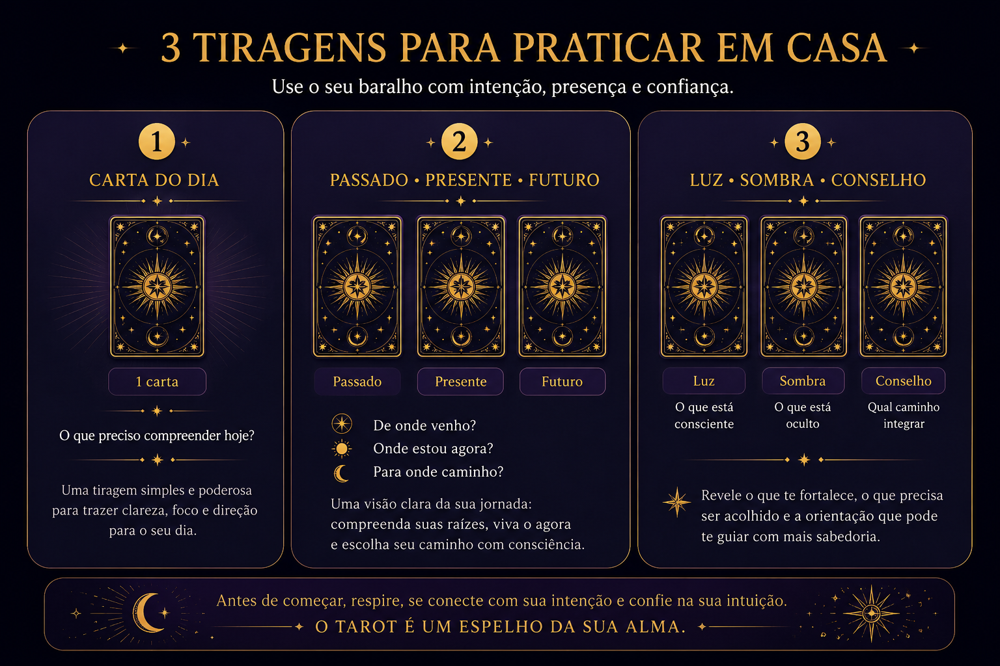

Tiragem básica
O Tarot não responde por você. Ele amplia aquilo que já busca emergir da sua consciência. Embaralhe os Arcanos e observe quais símbolos desejam dialogar com sua jornada neste momento.
O Tarot não responde por você. Ele amplia aquilo que já busca emergir da sua consciência. Embaralhe os Arcanos e observe quais símbolos desejam dialogar com sua jornada neste momento.
